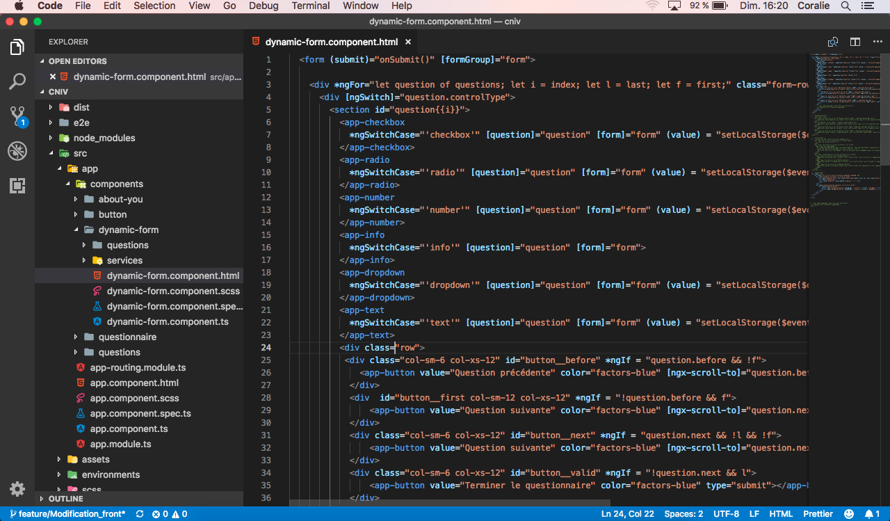
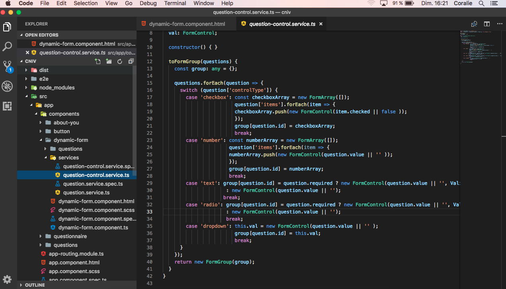
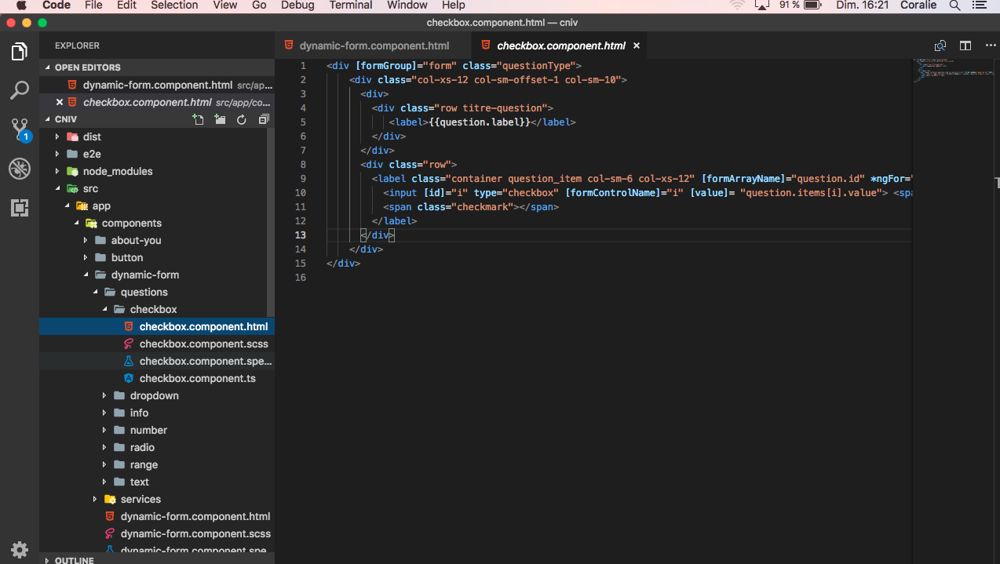
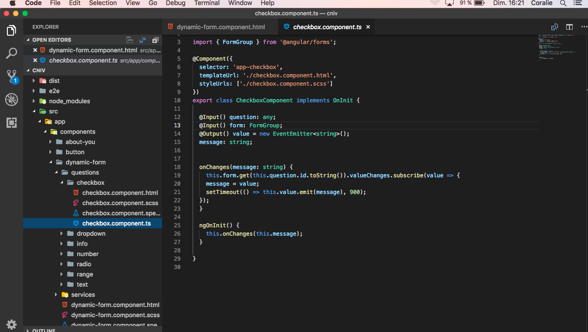
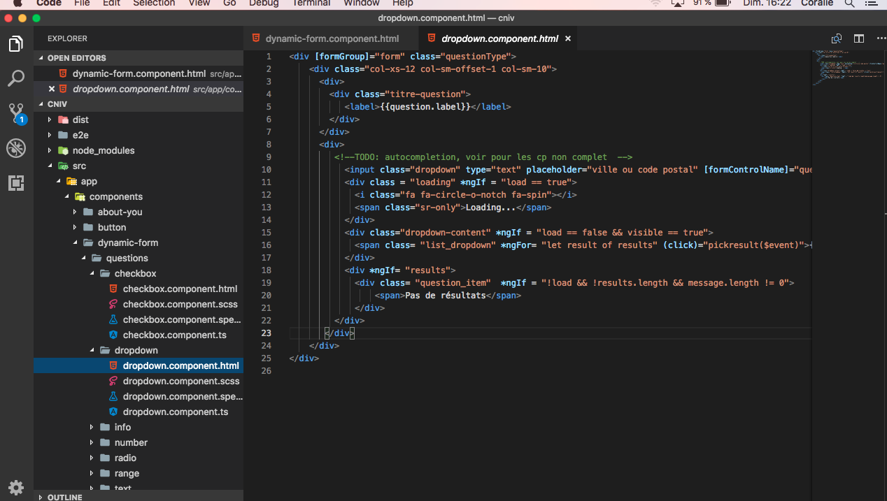
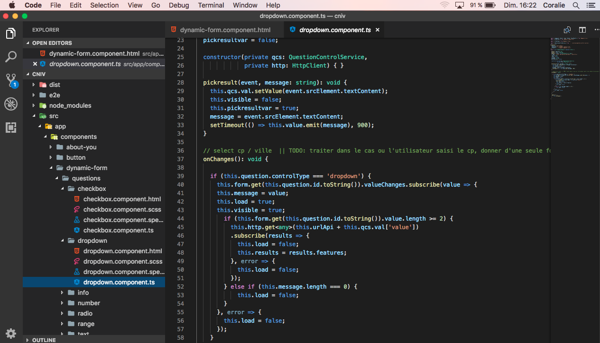
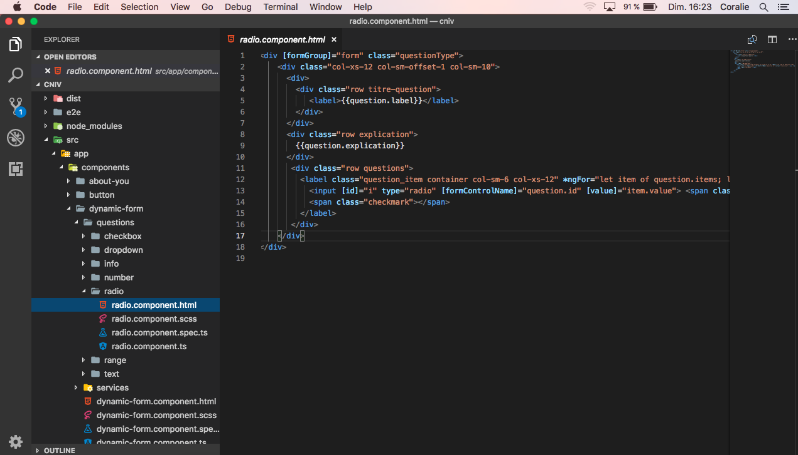

Stage 2 - PASSIVE RECORDS - ROUBAIX
Retour à l'accueil
Mes missions
Inserer un thème dark dans un projet existant
Création d'un formulaire avec Angular Dynamic Form
Utilisation de formControl et de formArray pour le traitement des réponses du formulaire
Ajout d'un localstorage afin de garder les données saisies en cas de coupure
création d'une API afin de stocker les données reçues mais aussi pour renvoyer les résultats
API pour générer les questions
API pour mettre à jour les données envoyées
Impressions d'ecran






